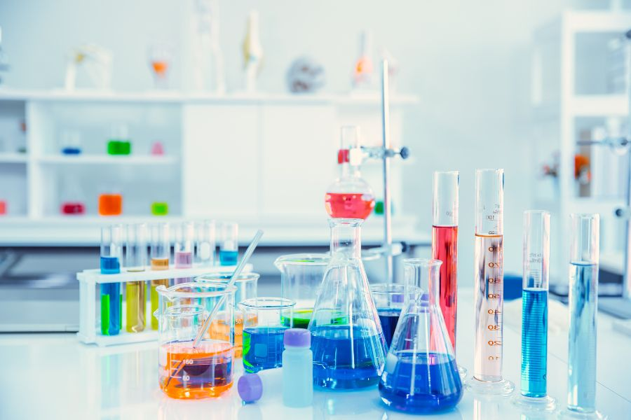

0
Girls Empowered Since 2010
Every statistic on this page is a girl who was believed in. Here is what happens when you invest in a girl in science.
These are the real results of what believing in a girl in science
looks like.
Hover each card to hear her story.
From self-doubt to shaping future leaders
"Education is more than exams; it’s about believing in your potential."
Rebecca Duodu, a mathematics teacher from Tamale, discovered confidence and purpose through Girls in Science. Though her path shifted from her dream of engineering, she has spent six years teaching and mentoring girls aged 12–20, empowering them to overcome challenges and pursue STEM. Today, she is shaping the next generation of scientists, doctors, and leaders—one lesson at a time.

From small-town dreams to a PhD abroad
"We never know how deeply we might influence someone until we try. Just as mentorship changed my path, I now strive to show girls their potential isn’t defined by where they come from."
Grace Asantewaa Twumasi, who grew up in Assin Fosu, discovered new possibilities through the Girls in Science program. Now pursuing a PhD in Food Science and Technology in Thailand, she runs a structured mentorship program for young adults and continues to invest in the next generation, proving that exposure and guidance can transform lives far beyond their starting point.

From mentee to STEM educator
"The girls I teach today won’t face the same limitations I did. That’s the power of mentorship—it keeps giving through each generation we empower."
Florence Agbosu is a math and science teacher in Accra who found her path through Girls in Science at Breman Asikuma SHS. Inspired by mentorship and exposure to women in STEM, she chose teaching over medicine, founded a girls’ science club, and now mentors young women while advocating for broader STEM opportunities across Ghana.
Tracking each girl's progression from secondary school into STEM higher education programs across Ghana and beyond.
Quality of one-on-one career counseling relationships, measured by frequency, duration, and self-reported confidence growth.
Public speaking, leadership, time management, and self-awareness that help students lead in and beyond the classroom.
How many alumni return as peer mentors, volunteers, or board members, our strongest marker of a self-sustaining movement.
Here are some of the different fields where our alumni are building their futures.
Select a field to explore where alumni are making impact.
The movement is growing. These are our goals and how far we have already come.
Find a role model that shows you that your dream is not just possible, it is probable.
Apply NowJoin us to bring hands-on STEM experiences to girls who have never had access to them before.
Partner With UsYour support provides workshops and essential resources for girls in Ghana.
Donate Now